Legend:classabstract classenumerationinheritance (extends)association (has a reference)dependency (uses or creates)aggregation (holds objects)+ public− private# protecteditalic – abstract
For the final project we chose the topic "School Management System" from the list of suggested topics. The topic proposes three patterns: Factory to create staff and student profiles, Observer for grade and report notifications and Decorator to add roles or permissions. The project must contain at least six patterns, so we added Builder, Strategy and Facade.
The result is SchoolDesk, a console application written in Java 17. With it a school office can register students and teachers, create courses, enroll students in courses, record grades, see the final result of every student in every course and issue a report for a student. Students and teachers receive notifications. The gradebook can be exported to a CSV file.
The goal of the project was not to build a big system, but to show how several design patterns work inside one program and help each other. That is why we did not use a database, a web framework or external libraries. All data is stored in memory, and the user works with a text menu. This keeps the code small, so every class can be opened and explained during the defense.
The report has the following structure. Section 2 shows how the work was divided between the team members. Section 3 describes what the application does and its rules. Section 4 gives the general architecture. Section 5 explains each of the six patterns with a UML diagram and Java code. Section 6 shows how the patterns are connected. Section 7 contains screenshots of the running program, and section 8 describes testing. The report ends with the conclusion and further work.
The team consists of three students of group SE-2526. Each student is responsible for two design patterns and the classes around them. The table below shows the distribution.
| Student | Patterns | Classes and other work |
|---|---|---|
| Kuandykov Adilzhan | Factory Method, Decorator | Package school.people: Person, Student, Teacher, Role, PersonCreator, StudentCreator, TeacherCreator, PersonRegistry. Package school.access: Permission, Access, ReadOnlyAccess, AccessDecorator, RegistrarAccess, GradingAccess, AccessModes, AccessDeniedException. Validation; tests for profiles and access. |
| Yussupov Nurlan | Builder, Strategy | Course with Course.Builder, Enrollment, GradingService. Package school.grading: Assessment, GradingStrategy, WeightedGrading, PassFailGrading, GradingPolicies, GradeMath, GradeResult; tests for grading, courses and enrollments; UML diagrams. |
| Amangeldi Assylzhan | Observer, Facade | Package school.events: EventBus, SchoolListener, SchoolEvent, EventType, ActivityLog, Inbox, StudentNotifier, TeacherNotifier. SchoolFacade, EnrollmentService, StudentReport, ConsoleApp, ConsoleInput, CsvExport, DemoData; integration tests, build scripts. |
The source code is kept in one Git repository: https://github.com/Asylstyle/school-management-system.
After start the program loads sample data (two teachers, three students, four courses) and shows the main menu. The menu has the following commands:
| No. | Command | What it does |
|---|---|---|
| 1 | Overview | Shows the number of students, teachers, courses and enrollments. |
| 2 | People | Lists all registered people with their ID and role. |
| 3 | Add person | Registers a new student or teacher. |
| 4 | Courses | Lists courses with the teacher, used seats, grading policy, semester, credits and prerequisites. |
| 5 | Add course | Creates a course. Only the code, the title and the teacher are required, other values have defaults. |
| 6 | Enroll student | Enrolls a student in a course if the prerequisites are passed and there is a free seat. |
| 7 | Gradebook | Shows all assessments and the final result for each enrollment. |
| 8 | Record grade | Adds an assessment (title, score, weight) for a student in a course. The student gets a notification. |
| 9 | Activity | Shows the log of all successful operations with time. |
| 10 | Access mode | Switches between viewer, registrar, grading and admin permissions. |
| 11 | Export CSV | Saves the gradebook to a CSV file. |
| 12 | Student report | Issues the report of one student: courses, results and earned credits. The student gets a notification. |
| 13 | Notifications | Shows the notifications of one student or teacher. |
| 0 | Exit | Closes the program. |
s001 and S001 are the same ID. A teacher and a student cannot have the same ID.VIEW, changing operations need their own permissions. Without the permission the operation is rejected.src/main/java/school/ ConsoleApp, ConsoleInput, DemoData
src/main/java/school/core/ SchoolFacade, EnrollmentService, GradingService, Course, Enrollment,
StudentReport, CsvExport
src/main/java/school/people/ Person, Student, Teacher, Role, creators, PersonRegistry
src/main/java/school/access/ Access, decorators, AccessModes, Permission, AccessDeniedException
src/main/java/school/grading/ GradingStrategy, two policies, GradingPolicies, Assessment, GradeResult
src/main/java/school/events/ EventBus, SchoolListener, SchoolEvent, ActivityLog, notifiers, Inbox
src/main/java/school/common/ Validation
src/test/java/school/ tests (12 files)
docs/ report, UML sources, diagrams, screenshots
build.ps1, build.sh build scripts for Windows and for Linux and macOS
.github/workflows/ automatic build and test on GitHub
The application has 44 classes in seven packages. The project needs only JDK 17 or newer. On Windows the commands are ./build.ps1 -Run to start the program and ./build.ps1 -Test to run the tests. On Linux and macOS the commands are sh build.sh run and sh build.sh test.
The program has three levels. The first level is the console (ConsoleApp, ConsoleInput). It only reads the input and prints the result. The second level is SchoolFacade. It receives all requests from the console, checks the permission and gives the work to four services: PersonRegistry, CourseCatalog, EnrollmentService and GradingService. After a successful operation it publishes an event. The third level contains the domain classes: people, courses, enrollments, assessments, grading policies, permissions and events.
The classes are divided into packages by their subject (Figure 1). The package school.core depends on the other packages, and they do not depend on it. The small package school.common has only the class Validation with the checks of texts, IDs and positive numbers that are used everywhere.
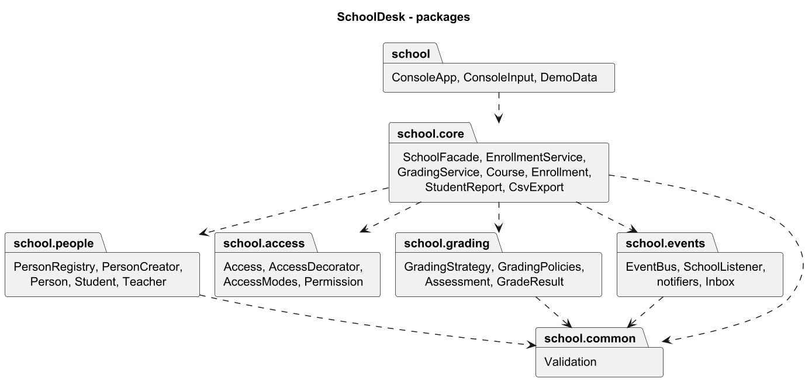
Figure 2 shows the main classes and the relations between them. All six patterns are visible on this diagram: the creators of people (Factory Method), the access classes, including AuditedAccess that logs refused checks (Decorator), Course.Builder (Builder), GradingStrategy with two implementations (Strategy), EventBus with listeners (Observer) and SchoolFacade with its four services (Facade).
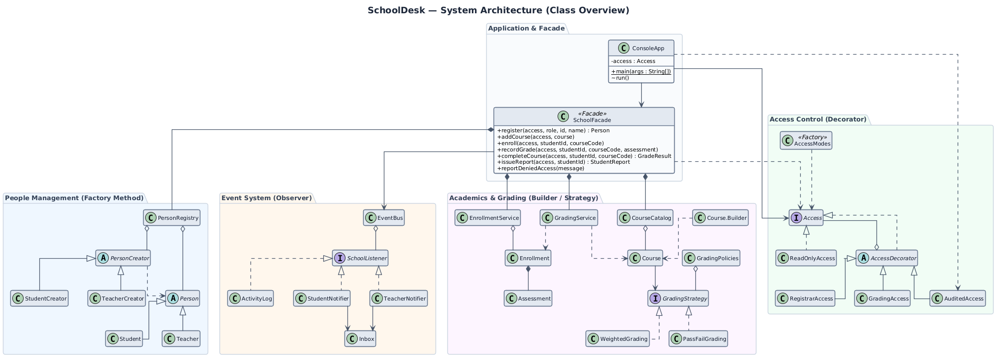
This section describes each pattern in the same order: the problem, how the pattern solves it in our project, the UML diagram, the code and the place where the pattern is used.
The system works with two kinds of people: students and teachers. More kinds can appear later, for example administrators or parents. If the program creates objects with new Student(...) and new Teacher(...) in the place where a person is registered, the common steps of registration (checking the ID and the name) have to be repeated for every kind, and every new kind changes this code.
The abstract class PersonCreator has the method register. It checks the input and then calls the abstract method create. This method is the factory method. The subclasses StudentCreator and TeacherCreator override it and return the concrete object. The code that calls register works only with the type Person and does not know which class was created.
The creators are kept in PersonRegistry in a map from the role to the creator. The map is filled once in the constructor. To register a person the registry takes the creator of the given role from the map, so there is no switch or if by the role.
public abstract class PersonCreator {
public final Person register(String id, String name) {
String checkedId = Validation.id(id, "ID");
String checkedName = Validation.text(name, "Name");
return create(checkedId, checkedName);
}
protected abstract Person create(String id, String name);
}public final class StudentCreator extends PersonCreator {
@Override
protected Person create(String id, String name) {
return new Student(id, name);
}
}public final class TeacherCreator extends PersonCreator {
@Override
protected Person create(String id, String name) {
return new Teacher(id, name);
}
}public abstract class Person {
private final String id;
private final String name;
protected Person(String id, String name) {
this.id = Validation.id(id, "ID");
this.name = Validation.text(name, "Name");
}
public final String id() {
return id;
}
public final String name() {
return name;
}
public abstract Role role();
@Override
public String toString() {
return name + " (" + id + ")";
}
}public final class Student extends Person {
public Student(String id, String name) {
super(id, name);
}
@Override
public Role role() {
return Role.STUDENT;
}
}public final class PersonRegistry {
private final Map<Role, PersonCreator> creators = new EnumMap<>(Role.class);
private final Map<String, Person> people = new LinkedHashMap<>();
public PersonRegistry() {
creators.put(Role.STUDENT, new StudentCreator());
creators.put(Role.TEACHER, new TeacherCreator());
}
public Person register(Role role, String id, String name) {
PersonCreator creator = creators.get(Objects.requireNonNull(role));
Person person = creator.register(id, name);
if (people.containsKey(person.id())) {
throw new IllegalArgumentException("This person ID already exists");
}
people.put(person.id(), person);
return person;
}
...
}The facade calls people.register(role, id, name) and works with the result as with a Person. To add a new kind of person we need a new subclass of Person, a new creator and one line in the constructor of the registry. The facade and the checks in register do not change. Figure 14 shows the registration of a teacher in the program.
Different users of the system can do different things. A viewer can only read. A registrar adds people and courses and enrolls students. A grading operator records grades, completes courses and issues reports. An administrator can do everything. If we make a separate class for every combination, the number of classes grows quickly, and a new permission set needs a new class again.
The interface Access answers the question "is this permission allowed?". The basic object is ReadOnlyAccess, it allows only viewing. AccessDecorator implements the same interface and keeps another Access object inside. RegistrarAccess and GradingAccess extend the decorator. Each of them adds its own permissions and passes all other questions to the wrapped object. Because decorators and the basic object have the same interface, they can be put one into another in any order.
A decorator can also add behaviour instead of permissions. AuditedAccess does not allow anything new: it asks the wrapped object and, when the answer is "no", reports the refused permission. The console wraps the current mode in this decorator, so every refused action appears in the activity log.
The method require throws our own exception AccessDeniedException when the permission is missing. The class AccessModes is the only place where the ready combinations are built: viewer, registrar, grading and admin.
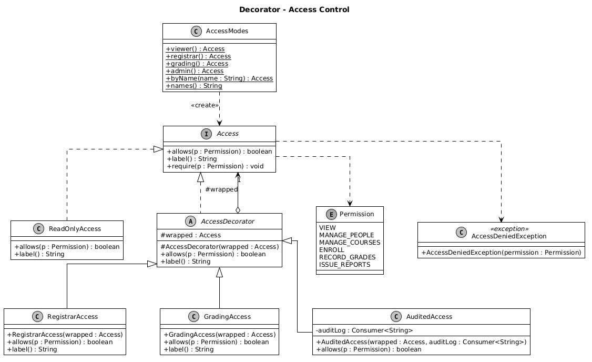
public interface Access {
boolean allows(Permission permission);
String label();
default void require(Permission permission) {
if (!allows(permission)) {
throw new AccessDeniedException(permission);
}
}
}public final class ReadOnlyAccess implements Access {
@Override
public boolean allows(Permission permission) {
return permission == Permission.VIEW;
}
@Override
public String label() {
return "Viewer";
}
}public abstract class AccessDecorator implements Access {
protected final Access wrapped;
protected AccessDecorator(Access wrapped) {
this.wrapped = Objects.requireNonNull(wrapped);
}
@Override
public boolean allows(Permission permission) {
return wrapped.allows(permission);
}
@Override
public String label() {
return wrapped.label();
}
}public final class RegistrarAccess extends AccessDecorator {
public RegistrarAccess(Access wrapped) {
super(wrapped);
}
@Override
public boolean allows(Permission permission) {
return switch (permission) {
case MANAGE_PEOPLE, MANAGE_COURSES, ENROLL -> true;
default -> super.allows(permission);
};
}
@Override
public String label() {
return wrapped.label() + " + Registrar";
}
}public final class GradingAccess extends AccessDecorator {
public GradingAccess(Access wrapped) {
super(wrapped);
}
@Override
public boolean allows(Permission permission) {
return switch (permission) {
case RECORD_GRADES, ISSUE_REPORTS -> true;
default -> super.allows(permission);
};
}
@Override
public String label() {
return wrapped.label() + " + Grading";
}
}public final class AuditedAccess extends AccessDecorator {
private final Consumer<String> auditLog;
public AuditedAccess(Access wrapped, Consumer<String> auditLog) {
super(wrapped);
this.auditLog = Objects.requireNonNull(auditLog);
}
@Override
public boolean allows(Permission permission) {
boolean allowed = super.allows(permission);
if (!allowed) {
auditLog.accept(label() + " was denied " + permission);
}
return allowed;
}
}The administrator is not a separate class. It is a viewer wrapped in two decorators. All modes are built in AccessModes and are found by name:
public final class AccessModes {
private static final Map<String, Access> MODES = new LinkedHashMap<>();
static {
MODES.put("viewer", viewer());
MODES.put("registrar", registrar());
MODES.put("grading", grading());
MODES.put("admin", admin());
}
private AccessModes() {
}
public static Access viewer() {
return new ReadOnlyAccess();
}
public static Access registrar() {
return new RegistrarAccess(viewer());
}
public static Access grading() {
return new GradingAccess(viewer());
}
public static Access admin() {
return new GradingAccess(new RegistrarAccess(viewer()));
}
public static Access byName(String name) {
Access access = MODES.get(name);
if (access == null) {
throw new IllegalArgumentException("Unknown access mode. Choose: " + names());
}
return access;
}
public static String names() {
return String.join("/", MODES.keySet());
}
}The menu command "Access mode" only asks the name of the mode. The list of names in the prompt also comes from AccessModes, so a new mode does not change the console. The chosen mode is wrapped in AuditedAccess, which sends refused checks to the facade, and the facade publishes them as ACCESS_DENIED events:
private void changeAccess() {
access = audited(AccessModes.byName(input.command("Mode (" + AccessModes.names() + ")")));
}
private Access audited(Access mode) {
return new AuditedAccess(mode, school::reportDeniedAccess);
}The label of the access object is also built by the decorators. That is why the menu shows "Viewer + Registrar + Grading" for the administrator and "Viewer + Grading" for the grading operator (Figure 18).
A course has eight values: code, title, teacher, capacity, grading policy, semester, credits and prerequisites. Only the code, the title and the teacher are required. The other five have default values, and a course can have any number of prerequisites. A constructor with eight parameters is hard to read, it is easy to mix up the order of the string parameters, and for every set of optional values we would need one more constructor. Also the course should not change after it is created, so setters are not suitable.
Course has a private constructor and a nested class Course.Builder. The required values (code and title) are given to the method Course.builder. The other values are set with the methods teacher, capacity, grading, semester, credits and prerequisite. Each of them returns the builder, so the calls can be written in a chain and only the needed values are named. The method build creates the course. All checks are in the constructor of Course, so a course with wrong data cannot be created. All fields of Course are final.
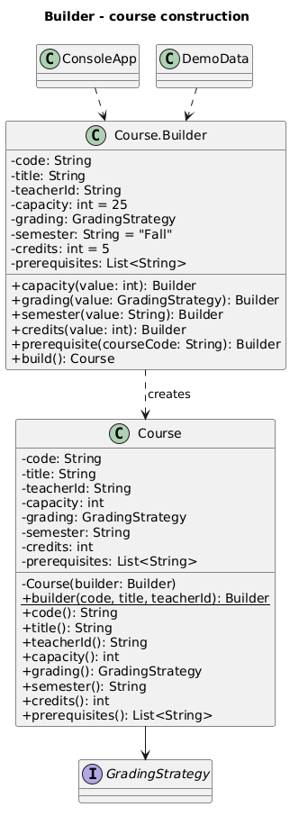
public final class Course {
private final String code;
private final String title;
private final String teacherId;
private final int capacity;
private final GradingStrategy grading;
private final String semester;
private final int credits;
private final List<String> prerequisites;
private Course(Builder builder) {
code = Validation.id(builder.code, "Course code");
title = Validation.text(builder.title, "Course title");
teacherId = Validation.id(builder.teacherId, "Teacher ID");
capacity = Validation.positive(builder.capacity, "Capacity");
grading = Objects.requireNonNull(builder.grading, "Grading policy is required");
semester = Validation.text(builder.semester, "Semester");
credits = Validation.positive(builder.credits, "Credits");
prerequisites = List.copyOf(builder.prerequisites);
}
public static Builder builder(String code, String title) {
return new Builder(code, title);
}
...
public static final class Builder {
private final String code;
private final String title;
private String teacherId;
private int capacity = 25;
private GradingStrategy grading = new WeightedGrading();
private String semester = "Fall";
private int credits = 5;
private final List<String> prerequisites = new ArrayList<>();
private Builder(String code, String title) {
this.code = code;
this.title = title;
}
public Builder teacher(String id) {
teacherId = id;
return this;
}
public Builder capacity(int value) {
capacity = value;
return this;
}
public Builder grading(GradingStrategy value) {
grading = value;
return this;
}
public Builder semester(String value) {
semester = value;
return this;
}
public Builder credits(int value) {
credits = value;
return this;
}
public Builder prerequisite(String courseCode) {
prerequisites.add(Validation.id(courseCode, "Prerequisite code"));
return this;
}
public Course build() {
return new Course(this);
}
}
}The sample data creates courses with the builder. The first two courses use the defaults, the third one sets the credits and another grading policy, the fourth one sets the semester, the credits and a prerequisite:
school.addCourse(admin, Course.builder("CS101", "Computer Science")
.teacher("T001")
.capacity(20)
.build());
school.addCourse(admin, Course.builder("MAT101", "Applied Mathematics")
.teacher("T002")
.capacity(24)
.build());
school.addCourse(admin, Course.builder("ART101", "Creative Workshop")
.teacher("T001")
.capacity(12)
.credits(3)
.grading(new PassFailGrading())
.build());
school.addCourse(admin, Course.builder("CS201", "Algorithms")
.teacher("T002")
.capacity(15)
.semester("Spring")
.credits(6)
.prerequisite("CS101")
.build());The menu command "Add course" asks the required values first. For every optional value the user can press Enter, and then the method of the builder is not called and the default stays (Figure 15):
private void addCourse() {
access.require(Permission.MANAGE_COURSES);
String code = input.text("Code");
String title = input.text("Title");
Course.Builder builder = Course.builder(code, title).teacher(input.text("Teacher ID"));
String capacity = input.text("Capacity (empty = default)");
if (!capacity.isEmpty()) {
builder.capacity(ConsoleInput.toInteger(capacity));
}
String grading = input.command("Grading (" + GradingPolicies.names() + ", empty = default)");
if (!grading.isEmpty()) {
builder.grading(GradingPolicies.byName(grading));
}
String semester = input.text("Semester (empty = default)");
if (!semester.isEmpty()) {
builder.semester(semester);
}
String credits = input.text("Credits (empty = default)");
if (!credits.isEmpty()) {
builder.credits(ConsoleInput.toInteger(credits));
}
String prerequisite = input.text("Prerequisite course (empty = none)");
if (!prerequisite.isEmpty()) {
builder.prerequisite(prerequisite);
}
school.addCourse(access, builder.build());
System.out.println("Course created.");
}The optional values are used by the program. The prerequisites are checked when a student is enrolled (Figure 16), and the credits of the passed courses are counted in the student report (Figure 21).
Courses are graded in different ways. Most courses give a letter from A to F, but some courses (for example a creative workshop) give only pass or fail. If this choice is written with if inside the gradebook, every new way of grading changes the existing code.
The interface GradingStrategy has the method calculate. It takes the list of assessments and returns the result with a score and a label. There are two implementations: WeightedGrading returns a letter and PassFailGrading returns PASS or FAIL. Every Course keeps its own strategy object. The code that shows the gradebook does not know which strategy is used. Both strategies use the same helper GradeMath.average for the weighted average, so the formula is written once.
The class GradingPolicies is a registry of the strategies by short names. The console finds a strategy by the name that the user typed and builds the prompt from the names of the registry. A new policy is one new class and one line in the registry.

public interface GradingStrategy {
Optional<GradeResult> calculate(List<Assessment> assessments);
String name();
}public final class WeightedGrading implements GradingStrategy {
@Override
public Optional<GradeResult> calculate(List<Assessment> assessments) {
if (assessments.isEmpty()) {
return Optional.empty();
}
double score = GradeMath.average(assessments);
return Optional.of(new GradeResult(score, letter(score)));
}
@Override
public String name() {
return "Weighted letters";
}
private String letter(double score) {
if (score >= 90) {
return "A";
}
if (score >= 80) {
return "B";
}
if (score >= 70) {
return "C";
}
if (score >= GradeMath.PASS_SCORE) {
return "D";
}
return "F";
}
}public final class PassFailGrading implements GradingStrategy {
@Override
public Optional<GradeResult> calculate(List<Assessment> assessments) {
if (assessments.isEmpty()) {
return Optional.empty();
}
double score = GradeMath.average(assessments);
String label = score >= GradeMath.PASS_SCORE ? "PASS" : "FAIL";
return Optional.of(new GradeResult(score, label));
}
@Override
public String name() {
return "Pass / Fail";
}
}final class GradeMath {
static final double PASS_SCORE = 60;
private GradeMath() {
}
static double average(List<Assessment> items) {
double maxWeight = 0;
for (Assessment item : items) {
maxWeight = Math.max(maxWeight, item.weight());
}
double total = 0;
double weights = 0;
for (Assessment item : items) {
double normalized = item.weight() / maxWeight;
total += item.score() * normalized;
weights += normalized;
}
return round(total / weights);
}
static double round(double score) {
return Math.round(score * 10) / 10.0;
}
}In GradeMath every weight is divided by the largest weight before the sum. The proportion between the weights stays the same, and the sum does not become too large when the weights are very big numbers. The result is rounded to one decimal place before the strategy chooses the label, so the label always agrees with the score on the screen.
public final class GradingPolicies {
private static final Map<String, GradingStrategy> POLICIES = new LinkedHashMap<>();
static {
POLICIES.put("letters", new WeightedGrading());
POLICIES.put("pass", new PassFailGrading());
}
private GradingPolicies() {
}
public static GradingStrategy byName(String name) {
GradingStrategy policy = POLICIES.get(name);
if (policy == null) {
throw new IllegalArgumentException("Unknown grading policy. Choose: " + names());
}
return policy;
}
public static String names() {
return String.join("/", POLICIES.keySet());
}
}GradingService takes the strategy from the course and asks it to calculate the result. The same result is used to decide if a prerequisite course is passed:
public Optional<GradeResult> result(Enrollment enrollment, Course course) {
return course.grading().calculate(enrollment.assessments());
}
public boolean passed(Enrollment enrollment, Course course) {
Optional<GradeResult> result = result(enrollment, course);
return result.isPresent() && result.get().passed();
}In Figure 17 the same gradebook shows "89.2 / B" for a course with letters and "91.0 / PASS" for a pass/fail course. The score 89.96 is shown as "90.0 / A".
After each operation (registration, new course, enrollment, new grade, issued report) other parts of the system need to know about it. In our program there are three such parts: the activity log, the notifications for students and the notifications for teachers. The facade should not call each of these parts directly, because then every new receiver changes the facade.
EventBus is the subject. It keeps a list of listeners and has the methods subscribe, unsubscribe and publish. SchoolListener is the observer interface with one method onEvent. The facade creates a SchoolEvent after each successful operation and gives it to the bus. The event has the type, the message, the time and the IDs of the student and the teacher that the event is about. The bus sends the event to all listeners. If the operation was rejected, no event is published.
There are three concrete observers, and each of them reacts in its own way:
ActivityLog saves every event.StudentNotifier reacts to a new grade and to an issued report. It puts a message into the inbox of the student.TeacherNotifier reacts to an enrollment. It puts a message into the inbox of the teacher of the course.The class Inbox keeps the list of messages for every person ID. Both notifiers write to the same inbox, and the menu command "Notifications" reads from it.

@FunctionalInterface
public interface SchoolListener {
void onEvent(SchoolEvent event);
}public record SchoolEvent(EventType type, String message, Instant at, String studentId, String teacherId) {
public SchoolEvent {
Objects.requireNonNull(type);
Objects.requireNonNull(at);
Objects.requireNonNull(studentId);
Objects.requireNonNull(teacherId);
message = Validation.text(message, "Event message");
}
}public final class EventBus {
private final List<SchoolListener> listeners = new ArrayList<>();
private final Consumer<RuntimeException> onFailure;
public EventBus() {
this(failure -> System.err.println("Notification failed: " + failure.getMessage()));
}
public EventBus(Consumer<RuntimeException> onFailure) {
this.onFailure = Objects.requireNonNull(onFailure);
}
public void subscribe(SchoolListener listener) {
Objects.requireNonNull(listener);
if (!listeners.contains(listener)) {
listeners.add(listener);
}
}
public void unsubscribe(SchoolListener listener) {
listeners.remove(listener);
}
public void publish(SchoolEvent event) {
Objects.requireNonNull(event);
for (SchoolListener listener : List.copyOf(listeners)) {
try {
listener.onEvent(event);
} catch (RuntimeException failure) {
onFailure.accept(failure);
}
}
}
}Two details of EventBus: the same listener is not added twice, and if one listener throws an exception, the other listeners still receive the event.
public final class ActivityLog implements SchoolListener {
private final List<SchoolEvent> events = new ArrayList<>();
@Override
public void onEvent(SchoolEvent event) {
events.add(event);
}
public List<SchoolEvent> events() {
return List.copyOf(events);
}
}public final class StudentNotifier implements SchoolListener {
private final Inbox inbox;
public StudentNotifier(Inbox inbox) {
this.inbox = Objects.requireNonNull(inbox);
}
@Override
public void onEvent(SchoolEvent event) {
if (event.type() == EventType.GRADE_RECORDED) {
inbox.deliver(event.studentId(), "New grade: " + event.message());
}
if (event.type() == EventType.REPORT_READY) {
inbox.deliver(event.studentId(), event.message());
}
}
}public final class TeacherNotifier implements SchoolListener {
private final Inbox inbox;
public TeacherNotifier(Inbox inbox) {
this.inbox = Objects.requireNonNull(inbox);
}
@Override
public void onEvent(SchoolEvent event) {
if (event.type() == EventType.STUDENT_ENROLLED) {
inbox.deliver(event.teacherId(), "New student: " + event.message());
}
}
}public final class Inbox {
private final Map<String, List<String>> messages = new HashMap<>();
public void deliver(String personId, String text) {
String id = Validation.id(personId, "Person ID");
messages.computeIfAbsent(id, key -> new ArrayList<>()).add(text);
}
public List<String> of(String personId) {
String id = Validation.id(personId, "Person ID");
return List.copyOf(messages.getOrDefault(id, List.of()));
}
}The three observers are subscribed to the bus when the program starts. The facade publishes events through the private method emit and does not know how many observers there are.
public static void main(String[] args) {
EventBus events = new EventBus();
ActivityLog log = new ActivityLog();
Inbox inbox = new Inbox();
events.subscribe(log);
events.subscribe(new StudentNotifier(inbox));
events.subscribe(new TeacherNotifier(inbox));
SchoolFacade school = new SchoolFacade(events);
DemoData.load(school);
...
}private void emit(EventType type, String message, String studentId, String teacherId) {
events.publish(new SchoolEvent(type, message, clock.instant(), studentId, teacherId));
}The menu command "Activity" prints the events saved by the log (Figure 20). The command "Notifications" shows the inbox of a person: a student sees the new grades and the issued report (Figure 21), a teacher sees the new students of the courses (Figure 22). Because SchoolListener has only one method, a new listener can also be written as a lambda.
One user action touches many classes. For example, to enroll a student the program must check the permission, find the course and the student, check the prerequisites with the grading rules, check the free seats, save the enrollment and publish an event. If the console does all these steps itself, the menu code becomes long, and the same steps must be repeated in tests and in the CSV export.
SchoolFacade gives one simple entry point to the whole subsystem. Behind it there are three services with their own data and rules:
PersonRegistry keeps the people and the creators, checks that the ID is new and finds students and teachers.EnrollmentService keeps the courses and the enrollments, checks the second enrollment and the free seats.GradingService adds assessments, checks their titles and calculates results with the strategy of the course.The facade does not keep data itself. Every method of the facade has the same order: it checks the permission of the caller, calls the services in the right order and publishes an event to EventBus. The facade has five operations (register, addCourse, enroll, recordGrade, issueReport) and several reading methods (people, courses, enrollments, result). The console, the CSV export and the tests call only the facade and do not know about the services.
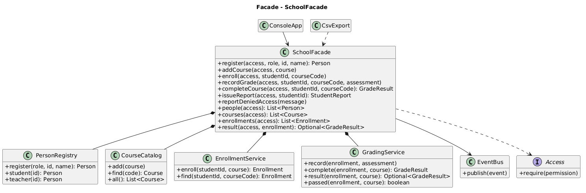
public final class SchoolFacade {
private final PersonRegistry people = new PersonRegistry();
private final EnrollmentService enrollments = new EnrollmentService();
private final GradingService grades = new GradingService();
private final EventBus events;
private final Clock clock;
public SchoolFacade(EventBus events) {
this(events, Clock.systemUTC());
}
public SchoolFacade(EventBus events, Clock clock) {
this.events = Objects.requireNonNull(events);
this.clock = Objects.requireNonNull(clock);
}
public Person register(Access access, Role role, String id, String name) {
access.require(Permission.MANAGE_PEOPLE);
Person person = people.register(role, id, name);
emit(EventType.PERSON_REGISTERED, person.name() + " registered as " + person.role(), "", "");
return person;
}
public void addCourse(Access access, Course course) {
access.require(Permission.MANAGE_COURSES);
Objects.requireNonNull(course);
people.teacher(course.teacherId());
for (String code : course.prerequisites()) {
if (!enrollments.hasCourse(code)) {
throw new IllegalArgumentException("Prerequisite course not found: " + code);
}
}
enrollments.addCourse(course);
emit(EventType.COURSE_CREATED, course.code() + " created: " + course.title(), "", course.teacherId());
}
public void enroll(Access access, String studentId, String courseCode) {
access.require(Permission.ENROLL);
Course course = enrollments.course(courseCode);
Person student = people.student(studentId);
for (String code : course.prerequisites()) {
if (!hasPassed(student.id(), code)) {
throw new IllegalArgumentException("Prerequisite not passed: " + code);
}
}
enrollments.enroll(student.id(), course);
emit(EventType.STUDENT_ENROLLED, student.name() + " enrolled in " + course.code(), student.id(), course.teacherId());
}
public void recordGrade(Access access, String studentId, String courseCode, Assessment assessment) {
access.require(Permission.RECORD_GRADES);
Enrollment enrollment = enrollments.find(studentId, courseCode);
grades.record(enrollment, assessment);
Course course = enrollments.course(enrollment.courseCode());
Person student = people.find(enrollment.studentId());
String message = assessment.title() + ": " + assessment.score() + " for " + student.name() + " / " + course.code();
emit(EventType.GRADE_RECORDED, message, student.id(), course.teacherId());
}
public StudentReport issueReport(Access access, String studentId) {
access.require(Permission.VIEW);
Person student = people.student(studentId);
List<String> lines = new ArrayList<>();
int credits = 0;
for (Enrollment enrollment : enrollments.ofStudent(student.id())) {
Course course = enrollments.course(enrollment.courseCode());
Optional<GradeResult> result = grades.result(enrollment, course);
String grade = result.map(GradeResult::display).orElse("Not graded");
lines.add(course.code() + " " + course.title() + " | " + course.credits() + " credits | " + grade);
if (grades.passed(enrollment, course)) {
credits += course.credits();
}
}
String message = "Report issued for " + student.name() + ", credits earned: " + credits;
emit(EventType.REPORT_READY, message, student.id(), "");
return new StudentReport(student.id(), student.name(), lines, credits);
}
public List<Person> people(Access access) {
access.require(Permission.VIEW);
return people.all();
}
...
}The reading methods check the permission VIEW and return copies of the lists, so the caller cannot change the data inside the services.
The menu command for recording a grade only reads the input and makes one call to the facade:
private void recordGrade() {
access.require(Permission.RECORD_GRADES);
String student = input.text("Student ID");
String course = input.text("Course code");
String title = input.text("Assessment title");
double score = input.decimal("Score (0-100)");
double weight = input.decimal("Weight");
school.recordGrade(access, student, course, new Assessment(title, score, weight));
System.out.println("Grade recorded.");
}The patterns are not separate examples. They are parts of one flow. The table shows the connections.
| Connection | Description |
|---|---|
| Facade and Factory Method | SchoolFacade.register calls PersonRegistry, which takes the creator of the role and gets a Person from it. |
| Facade and Decorator | Every method of the facade starts with access.require(...). The access object is a chain of decorators. |
| Facade and Builder | SchoolFacade.addCourse accepts a Course that was made by Course.Builder and checks its teacher and prerequisites. |
| Builder and Strategy | The builder puts a GradingStrategy into the course. The default is WeightedGrading. |
| Facade and Strategy | GradingService takes the strategy from the course and calls calculate. The facade uses the result for the gradebook, the report and the prerequisites. |
| Facade and Observer | After each successful operation the facade publishes an event to EventBus. ActivityLog saves it, StudentNotifier and TeacherNotifier write to the inbox. |
The next three sequence diagrams show this on real scenarios. Figure 9 shows registration of a student and enrollment (Facade, Decorator, Factory Method, Observer). Figure 10 shows recording of a grade with both cases of the permission check (Facade, Decorator, Observer). Figure 11 shows how the gradebook is calculated (Facade, Strategy).

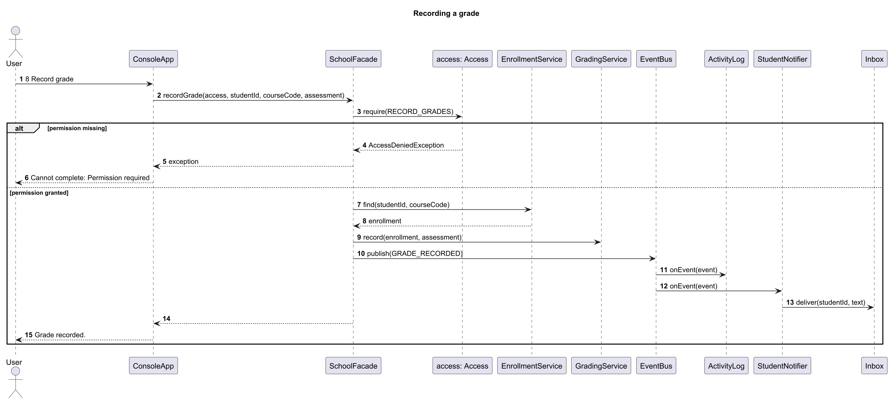

All screenshots in this section were taken from the program running in the Windows console.
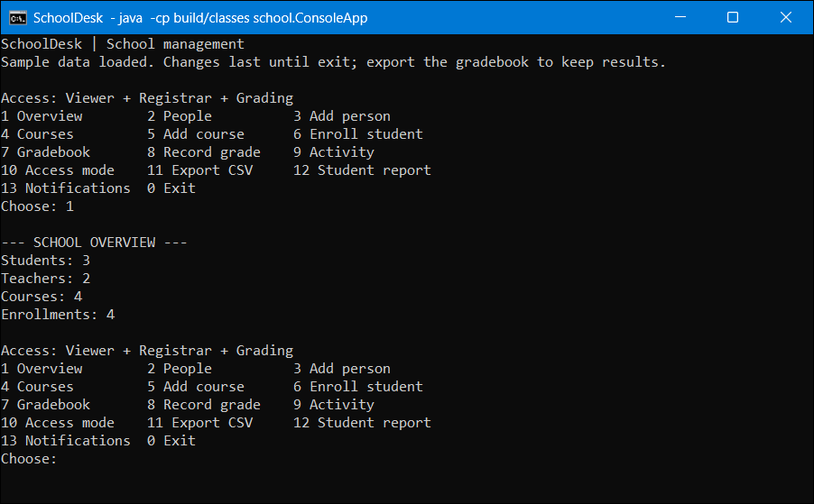

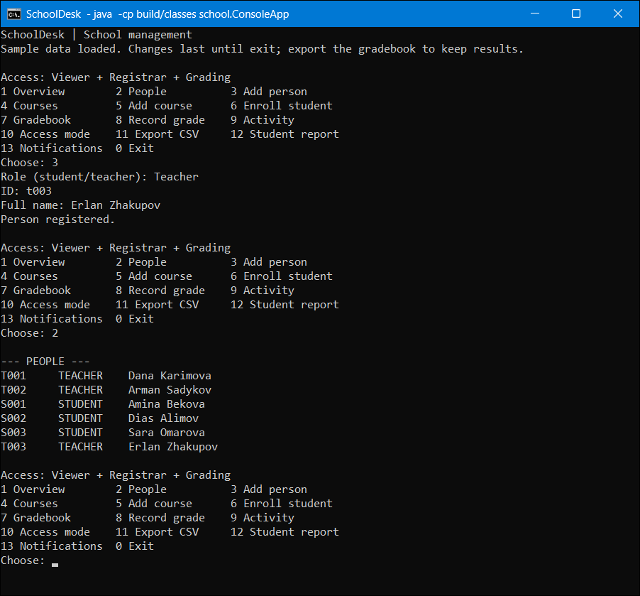
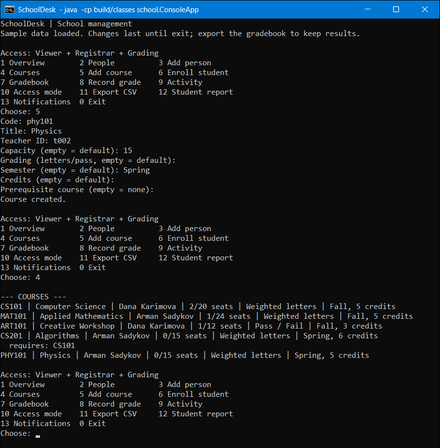
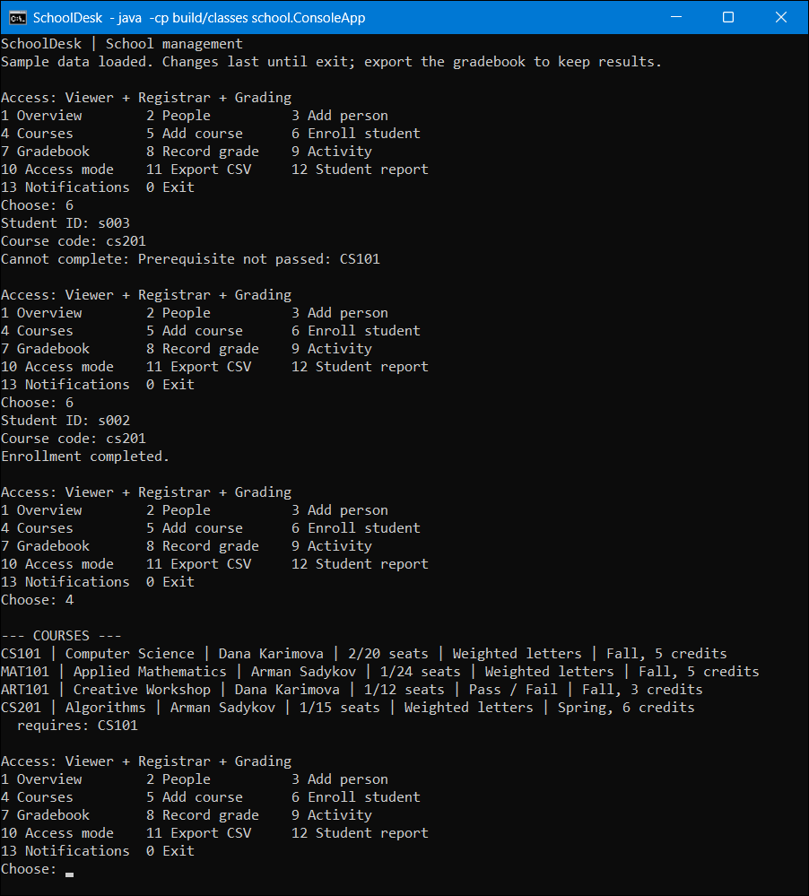
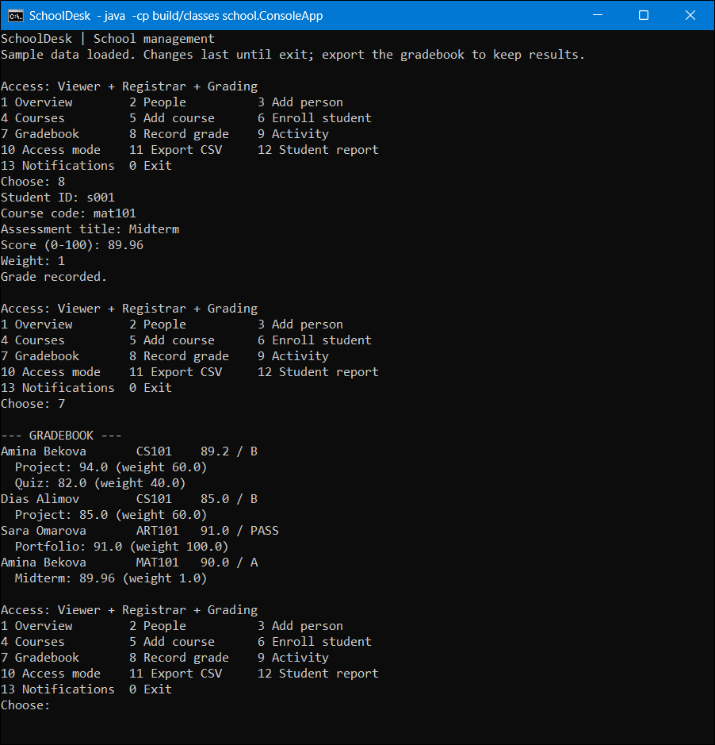
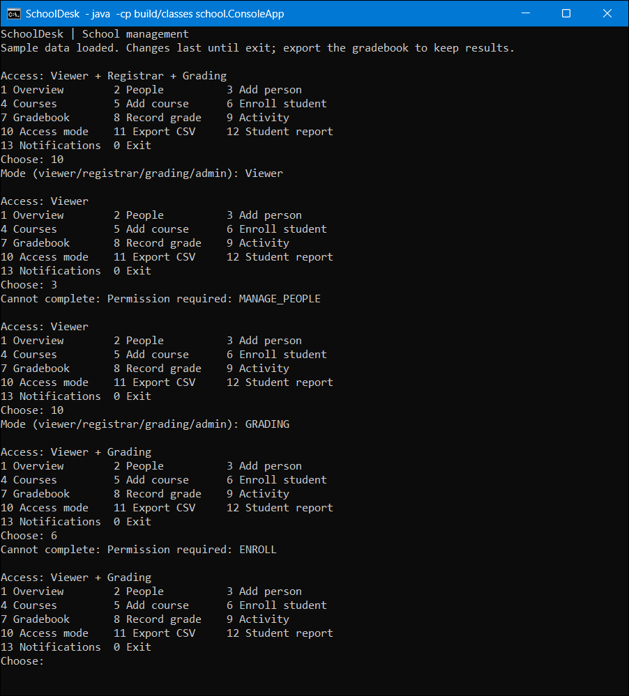
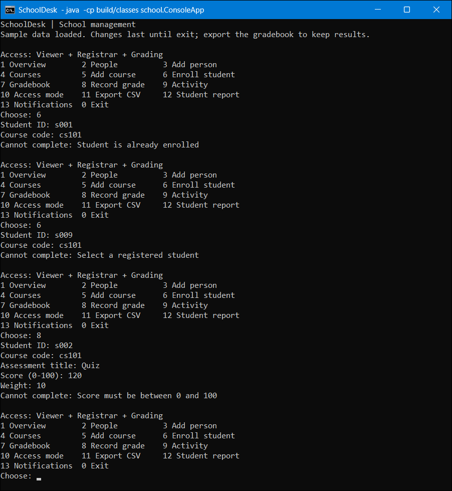
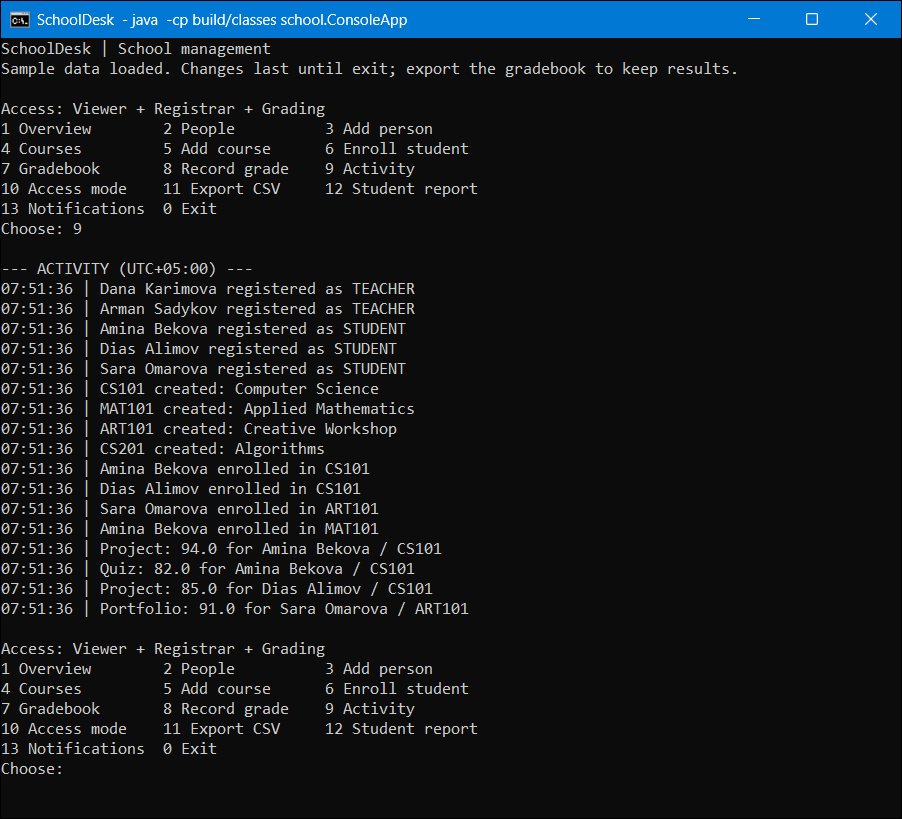
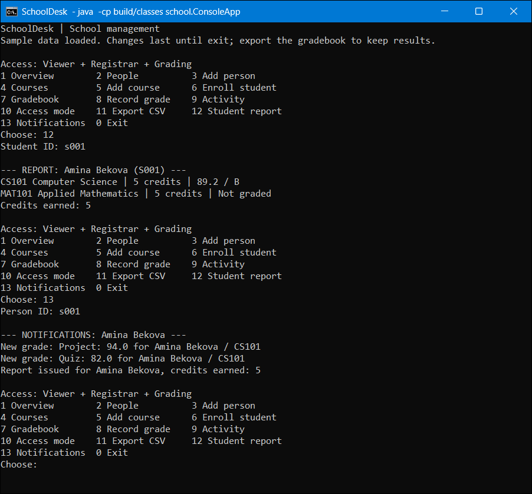
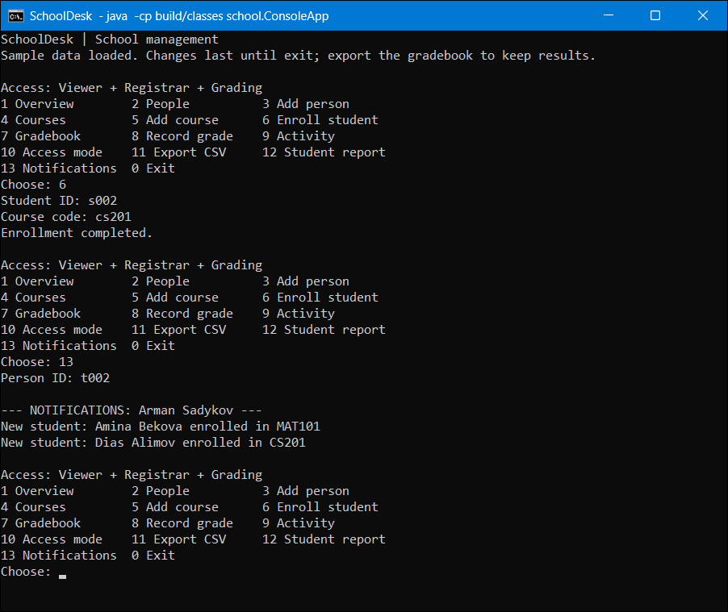
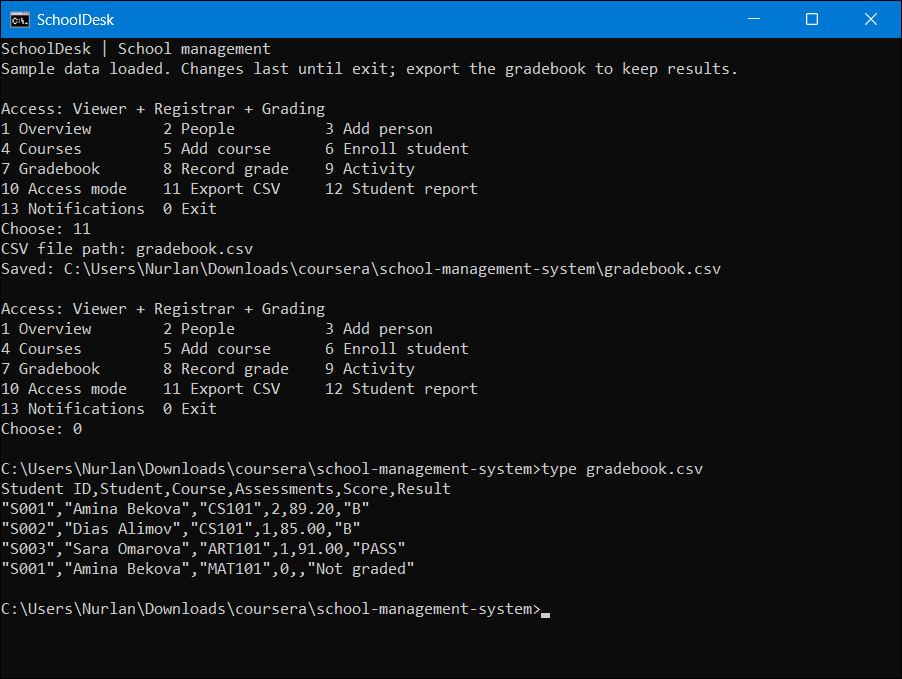
The project has its own small test runner without external libraries. The class Checks has three methods: equal compares two values, close compares two decimal numbers and fails checks that the code throws the expected exception. The class AllTests keeps the list of test groups and runs them one after another. The number of groups in the result is taken from this list. If any check fails, the program stops with an error.
| Test group | What is checked |
|---|---|
| ProfileTests | Creators return the right type and role; empty ID or name is rejected; the ID is stored in upper case; the registry chooses the creator by the role, rejects a second person with the same ID in another letter case and finds students and teachers. |
| AccessTests | Permissions of viewer, registrar, grading and admin; require throws AccessDeniedException; the modes of AccessModes and an unknown mode. |
| AssessmentTests | Score below 0 or above 100, wrong weight and empty title are rejected. |
| GradeTests | Weighted average 89.2; borders of the letters with rounding (59.94 and 59.96, 89.94 and 89.96); pass/fail border; empty list gives no result; the registry of policies. |
| CourseTests | Defaults of the builder; every optional method; the list of prerequisites cannot be changed; a course without a teacher, with capacity 0 or with credits 0 is rejected. |
| EnrollmentTests | Second enrollment and a full course are rejected; IDs in another letter case find the same enrollment; duplicate assessment title; the lists returned to the caller cannot be changed. |
| ObserverTests | A listener is not added twice; unsubscribe works; an error in one listener does not stop the others; every notifier reacts only to its own events and writes to the right inbox; a rejected grade gives no notification. |
| SchoolTests | The facade: duplicate IDs, missing permissions including VIEW, unknown prerequisite, prerequisite that is not passed, full course, second enrollment, the student report, number of published events. |
| ExportTests | Content of the CSV text and of the saved file; quotes in cells. |
| ConsoleTests | Scenarios through the menu: add a student, enroll, record a grade, switch to viewer and get a refusal; a course with defaults; the report and the notifications; commands in another letter case. |
Result of the command ./build.ps1 -Test:
PASS: 211 checks across 10 test groups
The code is compiled with all compiler warnings switched on (-Xlint:all) without warnings. The repository also has a GitHub Actions workflow (.github/workflows/java.yml). After every push it builds the project with JDK 17 and runs the tests.
In this project we built a console school management system and used six design patterns in it: Factory Method, Decorator, Builder, Strategy, Observer and Facade. Each team member is responsible for two patterns. The patterns are connected in one program: the facade receives every request, checks the decorated access object, gives the work to the services, which use the creators, the courses made by the builder and the strategy of the course, and publishes events to the observers.
During the work we saw the practical value of the patterns. With Factory Method a new kind of person does not change the registration code. With Decorator four access modes are made from three small classes. With Builder a course with eight values is created by naming only the needed ones. With Strategy a new grading policy is one new class. With Observer the log and the notifications of students and teachers are added without changes in the facade. With Facade the console code stays short and the tests use the same operations as the user. The main difficulty was to keep the patterns simple and not to add classes that the program does not need.